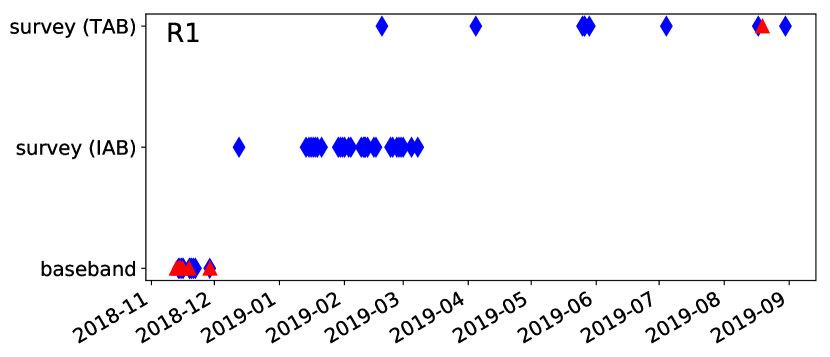
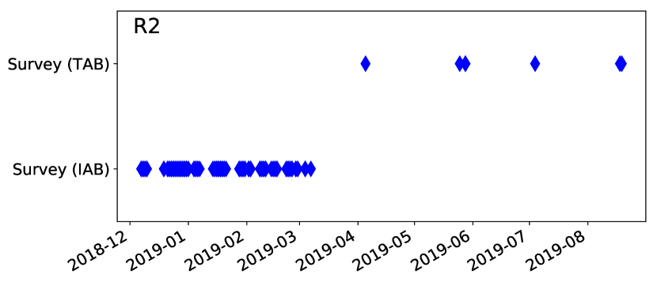
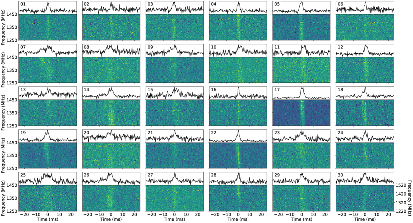
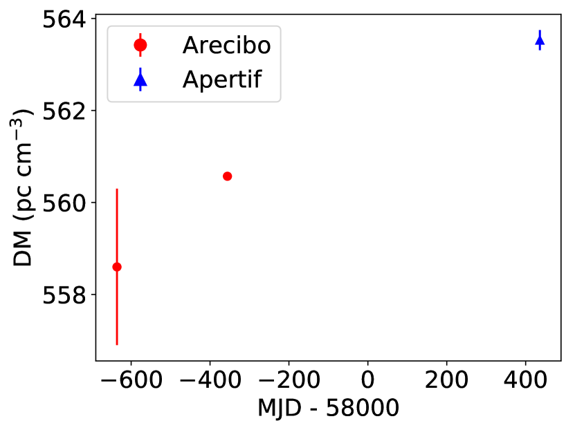
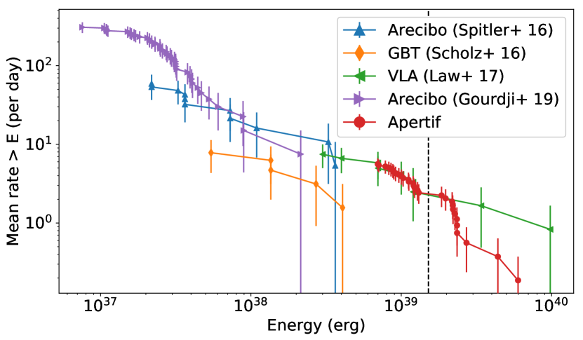
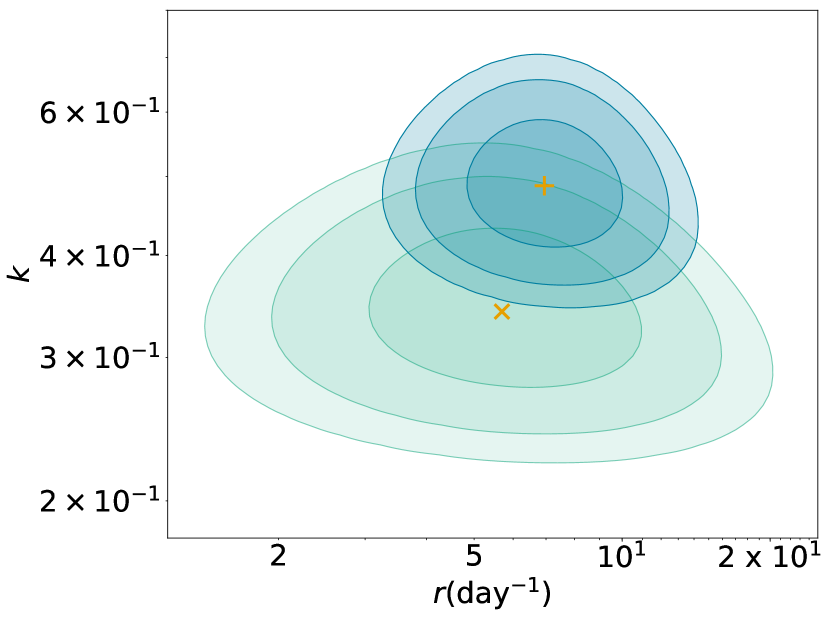
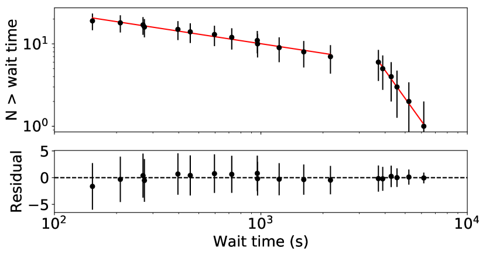
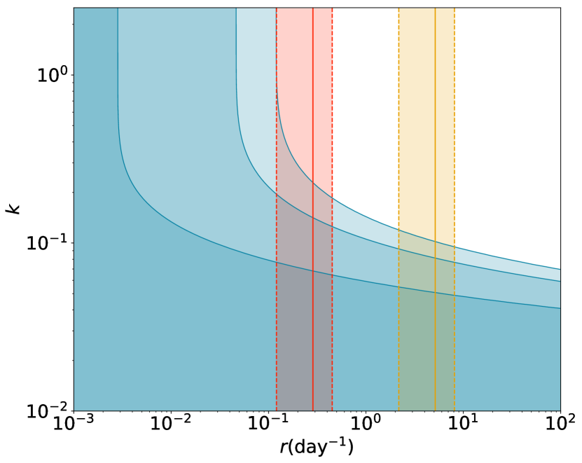

الدفقات الراديوية السريعة المتكررة باستخدام WSRT/Apertif
الملخص
Context. تتيح الدفقات الراديوية السريعة المتكررة (FRBs) فرصًا ممتازة لتحديد أسلاف FRB وبيئاتها المضيفة، وكذلك لفك آلية الانبعاث الكامنة. وقد تحمل الدراسات التفصيلية للدفقات الراديوية السريعة المتكررة أيضًا دلائل على أصل FRBs بوصفها مجموعة.
Aims. نهدف إلى كشف الدفقات الصادرة من أول دفقَتين راديويتين سريعتين متكررتين: FRB 121102 (R1) وFRB 180814.J0422+73 (R2)، وإلى توصيف إحصاءات تكرارهما. ونرغب كذلك في تحسين تحديد موضع R2 في السماء بدرجة كبيرة وتحديد مجرته المضيفة.
Methods. نستخدم تلسكوب Westerbork Synthesis Radio Telescope لإجراء متابعة واسعة لهاتين الدفقَتين الراديويتين السريعتين المتكررتين. ويتيح نظام التغذية الجديد ذي المصفوفة الطورية، Apertif، تغطية كامل عدم اليقين في موضع R2 السماوي بدقة مكانية عالية في توجيه واحد. وبُحثت البيانات عن دفقات حول مقاييس التشتت المعروفة للمصدرين. ونوصّف توزيع الطاقة وتكتل دفقات R1 المكتشفة.
Results. اكتشفنا 30 دفقة من R1. وتتضح الطبيعة غير البواسونية بجلاء من أزمنة وصول الدفقات، بما يتسق مع ادعاءات سابقة. وتشير قياساتنا إلى مقياس تشتت قدره ، مما يوحي بزيادة ملحوظة في DM خلال السنوات القليلة الماضية. وبافتراض ثبات زاوية الموضع عبر الدفقة، نضع حدًا أعلى قدره 8% لكسر الاستقطاب الخطي لألمع دفقة في عينتنا. ولم نكشف أي دفقات من R2.
Conclusions. قد لا يلائم قانون قوى واحد توزيع طاقات دفقات R1 عبر كامل مدى الطاقة أو عبر كشوفات متباعدة كثيرًا. وتوفر أرصادنا قيودًا محسّنة على تكتل دفقات R1. وتدل حدودنا العليا الصارمة على كسر الاستقطاب الخطي على زوال استقطاب كبير، إما متأصل في آلية الانبعاث أو ناجم عن الوسط المتداخل، عند 1400 MHz لا يُرصد عند الترددات الأعلى. إن عدم كشف أي دفقات من R2، رغم ما يقرب من 300 hrs من الأرصاد، يعني إما طبيعة شديدة التكتل للدفقات، أو مؤشرًا طيفيًا شديد الانحدار، أو مزيجًا من الاثنين على افتراض أن المصدر لا يزال نشطًا. وهناك احتمال آخر هو أن R2 قد توقف تمامًا، إما على نحو دائم أو لفترة زمنية ممتدة.
Key Words.:
المتصل الراديوي: عام – النجوم: النيوترونية – النجوم النابضة: عام1 مقدمة
الدفقات الراديوية السريعة (FRBs) أحداث عابرة شديدة اللمعان تتميز بمقاييس زمنية قصيرة، لا تتجاوز عادة بضعة ميلي ثوانٍ، وبمقاييس تشتت (DMs) أكبر عمومًا بكثير مما يُتوقع من كثافة الإلكترونات المجرية. وتشير هذه الخصائص إلى أن FRBs نشأت من مصادر خارج مجرية مدمجة وعالية الطاقة (Lorimer et al., 2007; Thornton et al., 2013). وعلى الرغم من المتابعة الواسعة، تبيّن أن غالبية FRBs المكتشفة أحداث منفردة (Petroff et al., 2015). غير أنه حتى الآن، أُبلغ عن 20 من FRBs تُظهر دفقات متكررة (Spitler et al., 2016; CHIME/FRB Collaboration et al., 2019a, b; Patek & CHIME/FRB Collaboration, 2019; Fonseca et al., 2020). ولمراجعة حديثة عن FRBs، انظر Petroff et al. (2019).
تتيح الدفقات المتكررة من بعض FRBs دراسة خصائص عدة لهذه الظواهر يصعب جدًا تناولها في المصادر المنفردة. فعلى سبيل المثال، تجعل المتابعة العميقة للدفقات الراديوية السريعة المتكررة من الممكن تحديد مواضعها السماوية بدقة عالية جدًا، وتحديد المجرات المضيفة وحتى المصادر الراديوية أو البصرية أو عالية الطاقة المستمرة المرتبطة بها، إن وجدت. كما تساعد دقة التحديد الموضعي في متابعة أي انبعاث عابر متعدد الأطوال الموجية مرتبط بالدفقات. ويفرض تكرار الدفقات من المصدر نفسه قيودًا على نظرية FRB كذلك. ويتمثل قيد مميز في أن الحدث الكارثي لا يستطيع إنتاج FRBs متكررة، وأن عملية الانبعاث الكامنة ينبغي أن تكون قادرة على الاستمرار و/أو التكرر على فترات طويلة جدًا لا تقل عن عدة سنوات. كما يساعد التكرار في إجراء تحريات أكثر تفصيلًا بكثير للدفقات المفردة، مثلًا باستخدام إزالة تشتت مترابطة بدقة زمنية وترددية عالية و/أو عبر نطاق ترددي واسع.
في وقت الأرصاد المستخدمة في هذا العمل، كانت دفقَتان راديويتان سريعتان معروفتين بالتكرار — FRB 121102 وFRB 180814.J0422+73 (ويشار إليهما فيما بعد بـ R1 وR2، على التوالي، Spitler et al., 2016; CHIME/FRB Collaboration et al., 2019a). وقد حُدد موضع R1 بدقة (Chatterjee et al., 2017; Marcote et al., 2017) في مجرة قزمة منخفضة الكتلة ومنخفضة الفلزية (Tendulkar et al., 2017)، الأمر الذي ساعد في استكشاف الأسلاف المحتملة نظريًا. وقد كشفت المتابعة الراديوية التفصيلية عدة سمات مثيرة في R1. ومن السمات الجديرة بالذكر على وجه الخصوص البنى الزمنية-الترددية المعقدة الملحوظة في عدة دفقات مفردة، على هيئة نطاقات ترددية بعرض يقارب 250 MHz (عند 1400 MHz) تنجرف نحو ترددات أدنى (Hessels et al., 2019). ولا تنتج هذه النطاقات عن الوميض بين النجمي، بل يُرجح أن تكون إما متأصلة في عملية الانبعاث أو ناجمة عن آثار انتشار غير مألوفة مثل العدسية البلازمية. كما رُصدت نطاقات ترددية مشابهة، وإن من دون الانجراف في بعض الحالات، من عدد من النجوم النيوترونية المجرية (النجم النابض في السرطان PSR B0531+21، Hankins et al. 2016; ماغنيتار مركز المجرة PSR J17452900، Pearlman et al. 2018; الماغنيتار XTE J1810197، Maan et al. 2019). ومع ذلك، فإن أي صلات بين هذه النجوم النيوترونية المجرية وFRBs لا تزال غير واضحة، وتتطلب مزيدًا من الدراسة. لذلك نركز في هذا العمل على توزيع طاقة نبضات FRB المتكررة وإحصاءات التكرار، ونقارنها بتلك الخاصة بالنبضات العملاقة للنجوم النابضة والدفقات الصادرة من مكررات أشعة غاما اللينة (SGRs) والماغنيتارات.
لا توصف أزمنة وصول دفقات R1 وصفًا جيدًا بعملية بواسون متجانسة (Scholz et al., 2016; Oppermann et al., 2018)، مما يدل على طبيعة متكتلة للدفقات. ولهذا التكتل آثار مهمة في تحديد معدل التكرار بدقة وكذلك في استراتيجيات الرصد المثلى. وقد يحمل أيضًا دلائل عن آلية الانبعاث. وعلاوة على ذلك، تُظهر دفقات R1 استقطابًا خطيًا يقارب 100% عند 4500 MHz ومقياس دوران كبيرًا على نحو استثنائي وسريع التغير (RM; ; Michilli et al., 2018). ويشير ذلك إلى أن دفقات R1 تُبعث في بيئة مغنطو-أيونية متطرفة ومتغيرة، أو تنتشر خلالها. وبسبب زوال الاستقطاب المحتمل بين القنوات، الناجم عن RM الكبير استثنائيًا، فإن خصائص الاستقطاب عند 1400 MHz ليست معروفة تمامًا. ويتطلب التوصيف الاستقطابي عند هذا التردد أرصادًا بقنوات ترددية ضيقة معقولة (100 kHz).
اكتُشف R2 باستخدام بيانات ما قبل التشغيل الرسمي من تلسكوب CHIME الذي يعمل في مدى ترددي من 400 إلى 800 MHz. وأظهرت بعض الدفقات من R2 أوجه شبه قوية مع تلك الصادرة من R1 من حيث البنى الزمنية-الترددية المعقدة. غير أن أوجه عدم اليقين في الموضع السماوي ( و في RA وDec، على التوالي CHIME/FRB Collaboration et al., 2019a) حدّت من أي مقارنات أكثر تفصيلًا بين الدفقَتين الراديويتين السريعتين المتكررتين، وكذلك من الدراسات الواسعة لدفقات R2 نفسها. وسيتيح تحديد موضعي دقيق باستخدام مقياس تداخل إجراء دراسات استقطابية وعالية الدقة مفصلة لدفقات R2، فضلًا عن استقصاء المجرة المضيفة وأي مصدر راديوي مستمر أو عالي الطاقة مرتبط بها.
في هذا العمل، نهدف إلى توصيف استقطاب 1400 MHz وطبيعة تكتل الدفقات من R1، ولا سيما للدفقات الواقعة عند الطرف الأكثر سطوعًا من توزيع الطاقة، وإلى تحديد موضع R2 ودراسة العديد من الجوانب المذكورة أعلاه لكلتا الدفقَتين الراديويتين السريعتين المتكررتين. ولهذا الغرض استخدمنا أساسًا بيانات التشغيل التجريبي من نظام Apertif الجديد على Westerbork Synthesis Radio Telescope (WSRT). وباستخدام مجموعات البيانات الكبيرة المكتسبة عن R1 وR2، نقدم هنا إحصاءات الانبعاث لهاتين الدفقَتين الراديويتين السريعتين، عند أعلى طاقات النبضات، وعلى أطول المقاييس الزمنية المبلغ عنها حتى الآن.
2 أنماط الرصد في Apertif
Aperture Tile in Focus (Apertif) هو نظام التغذية الجديد ذي المصفوفة الطورية المثبت على WSRT. وقد زاد مجال الرؤية (FoV) إلى درجة مربعة، محولًا WSRT إلى أداة مسح فعالة (Oosterloo et al. 2010; Adams & van Leeuwen 2019; van Capellen et al. قيد الإعداد). يعمل النظام في المدى الترددي MHz وبعرض نطاق أقصى يبلغ MHz. وتعتمد الدقة الترددية على نمط الرصد، كما هو موضح في الأقسام الفرعية التالية. وتكوّن كل واحدة من أطباق WSRT حزمًا من عناصر الاستقبال 121 تصل إلى 40 حزمة متداخلة جزئيًا على السماء (يشار إليها فيما بعد بالحزم المركبة)، لكل منها قطر يقارب عند . ثم تُرسل البيانات إلى النظام المركزي، الذي يعمل إما مترابطًا للتصوير (انظر Adams et al. قيد الإعداد)، أو مكوّن حزم لأنماط المجال الزمني (van Leeuwen, 2014).
يستغل نظام نمط الرصد في المجال الزمني مجال الرؤية الواسع للبحث عن FRBs جديدة وكذلك لتحديد مواضع أي FRBs متكررة سيئة التحديد. ويُمكّن هذا النمط طرف خلفي قادر على كشف مثل هذه الأحداث شديدة التشتت في زمن شبه حقيقي. وقد شغّلنا هذا النظام تجريبيًا على النجوم النابضة وFRBs المتكررة (van Leeuwen et al. قيد الإعداد). وقد استُخدم النمطان الزمنيان التاليان للحصول على البيانات المعروضة هنا.
2.1 نمط النطاق الأساسي
في نمط النطاق الأساسي، تُجمع الحزمة المركزية لما يصل إلى عشرة تلسكوبات للحصول على حزمة عالية الحساسية في اتجاه واحد، بدقة قدرها . ثم يقوم الطرف الخلفي للنجوم النابضة إما بطيّ النجوم النابضة في الزمن الحقيقي، أو بتسجيل الفولتية الخام بدقة زمنية قدرها ودقة ترددية قدرها MHz. ويتيح ذلك إزالة التشتت المترابطة، وكذلك اختيار مقايضة مثلى بين الدقة الزمنية والترددية. وخلال التشغيل التجريبي، كنا في البداية مقيدين بعرض نطاق قدره MHz وباستقطاب واحد. وتقل الحساسية الكلية لنظام الاستقطاب الواحد بمعامل عن حساسية النظام الكامل ذي الاستقطابين. وفي أوائل 2019 رُقّي النظام إلى استقطابين، وفي آذار/مارس 2019 زيد عرض النطاق إلى MHz.
2.2 أنماط المسح
في نمط المسح، يكوّن النظام حزمًا من جميع حزم الأطباق 40 إما مترابطة أو غير مترابطة. وفي النمط المترابط، تُجمع تدفقات الفولتية عبر ثمانية أطباق باستخدام الأوزان المركبة الملائمة. وتكون حزم المصفوفة المربوطة الناتجة (TABs) ضيقة () في اتجاه الشرق-الغرب، لكنها تحتفظ بدقة الطبق البالغة في اتجاه الشمال-الجنوب. وفي النمط غير المترابط، تُجمع بيانات الشدة عبر الأطباق لكل حزمة من الحزم المركبة 40 على حدة. وتحتفظ حزم المصفوفة غير المترابطة (IABs) بمجال رؤية الطبق الكامل، لكن مع فقدان في الحساسية قدره مقارنة بنمط TAB. وبالنسبة إلى بيانات نمط المسح، يُجمع الاستقطابان كلاهما. وتُخزن بيانات Stokes I الناتجة على القرص بصيغة filterbank بدقة زمنية قدرها ودقة ترددية قدرها MHz (Maan & van Leeuwen, 2017). ويكون عرض نطاق بيانات نمط المسح مماثلًا لعرض نطاق بيانات نمط النطاق الأساسي: 200 MHz حتى آذار/مارس 2019، و300 MHz منذ ذلك الحين.
3 الأرصاد واختزال البيانات
3.1 الأرصاد
رُصد R1 وR2 باستخدام Apertif بين تشرين الثاني/نوفمبر 2018 وآب/أغسطس 2019. ورُصد R1 في نمط النطاق الأساسي، وكذلك في نمطي المسح غير المترابط والمترابط. أما R2 فليس محدد الموضع بدقة كافية للرصد في نمط النطاق الأساسي، الذي لا يكون ملائمًا إلا إذا كان المصدر محددًا ضمن حزمة واحدة مربوطة من Apertif. ومع ذلك، رُصد باستخدام نمطي المسح غير المترابط والمترابط. وبالمجمل أمضينا hrs على R1 و hrs على R2. ويرد عرض عام للأرصاد في الشكل 1.


3.2 اختزال بيانات النطاق الأساسي لـ R1
أُزيل التشتت من بيانات النطاق الأساسي إزالة مترابطة باستخدام DM النموذجي لـ R1 والبالغ (Hessels et al., 2019)، وحُولت إلى filterbank باستخدام digifil. وفي هذه العملية، خُفِّضت الدقة الزمنية من إلى . ويقلل ذلك زمن الحساب مع ضمان بقاء أي دفقة مدتها لا تقل عن ، أي أقل من أضيق دفقة أُبلغ عنها حتى الآن، قابلة للكشف. ثم بُحثت بيانات filterbank عن أي دفقات ذات DM بين و بخطوات قدرها باستخدام PRESTO (Ransom, 2011)، وبعتبة نسبة إشارة إلى ضجيج (S/N) قدرها 8. وفُحصت جميع المرشحات بصريًا. وحُفظت البيانات الخام لنافذة طولها 20 ثانية حول كل دفقة مكتشفة لمزيد من التحليل.
3.3 اختزال بيانات المسح
بالنسبة إلى نمطي المسح كليهما، حُللت البيانات في الزمن الحقيقي بواسطة خط أنابيب GPU الخاص بنا، AMBER11 1 https://github.com/AA-ALERT/AMBER (Sclocco et al., 2016). يزيل AMBER التشتت من بيانات Stokes I الواردة إزالة غير مترابطة إلى قيم DM بين و بخطوات قدرها دون وبخطوات قدرها فوق ، ويكتب إلى القرص قائمة بالمرشحات ذات . وتُحلل هذه المرشحات تلقائيًا بمزيد من التفصيل بواسطة نمط المعالجة غير المتصل من خط أنابيب معالجة ARTS، DARC22 2 https://github.com/loostrum/darc. أولًا، تُعنقد المرشحات في DM والزمن لتحديد الدفقات التي كُشفت عند عدة قيم DM أو في عدة حزم في آن واحد. ومن كل عنقود، يُحتفظ فقط بالمرشح ذي أعلى S/N. وبالنسبة إلى جميع المرشحات المتبقية، تُستخرج من بيانات filterbank على القرص قطعة قصيرة من البيانات (عادة 2 s) محيطة بزمن وصول المرشح وتُزال عنها التشتت إلى قيمة DM التي يعطيها AMBER. ثم تُعطى هذه البيانات لمصنّف تعلّم آلي (Connor & van Leeuwen, 2018) يحدد ما إذا كان المرشح، على الأرجح، عابرًا راديويًا أم تداخلًا محليًا. وبالنسبة إلى جميع المرشحات التي يتجاوز احتمال كونها عابرًا فيزيائيًا فلكيًا ، تُنشأ مخططات فحص وتُرسل بالبريد الإلكتروني إلى الفلكيين.
ولأن خط الأنابيب كان لا يزال في مرحلة التشغيل التجريبي، فقد بُحثت البيانات أيضًا باستخدام خط أنابيب قائم على PRESTO كما فُعل في بيانات النطاق الأساسي. واستخدمنا لـ R1 مدى DM نفسه المستخدم لبيانات النطاق الأساسي. أما بالنسبة إلى R2، فقد ضُبط مدى DM على ، ليغطي مدى واسعًا حول DM المصدر البالغ (CHIME/FRB Collaboration et al., 2019a). وأعطى كلا خطي الأنابيب نتائج متطابقة.
4 R1
إجمالًا، كُشفت 30 دفقة من R1. ومن بينها، عُثر على 29 في أرصاد موجّهة بنمط النطاق الأساسي بين 12 و22 تشرين الثاني/نوفمبر 2018. وعُثر على دفقة واحدة أثناء أرصاد مسح TAB الاعتيادية في آب/أغسطس 2019. ويرد عرض عام للدفقات في الشكل 2.

4.1 معايرة الفيض
تُحدد S/N لجميع الدفقات التي تعرّفت عليها خطوط الأنابيب باستخدام مرشح مطابق بعروض boxcar بين 1 و200 عينة ( إلى ms). ويُحدد الضجيج في منطقة حول الدفقة أُكد بصريًا أنها خالية من التداخل. واستخدمنا معادلة مقياس الإشعاع المعدّلة (Cordes & McLaughlin, 2003; Maan & Aswathappa, 2014) لتحويل S/N التي حصلنا عليها إلى كثافة فيض عظمى. وبالنسبة إلى مقياس تداخل، يمكن كتابة معادلة مقياس الإشعاع على الصورة
| (1) |
حيث إن هي كثافة الفيض العظمى، و درجة حرارة النظام، و كسب طبق واحد، و عدد الأطباق المستخدمة، و معامل الترابط، و عدد الاستقطابات، و عرض النطاق، و عرض النبضة المرصود. ولا نستطيع قياس و على نحو مستقل بسهولة، لكن يمكننا قياس كثافة الفيض المكافئة للنظام () لكل طبق. وللقيام بذلك، أجرينا مسوح انجراف لمصادر المعايرة 3C147 و3C286. وأُخذت كثافات الفيض لكلا المصدرين من Perley & Butler (2017). وفي نمط TAB، نجد عادة SEFD قدره للحزمة المركزية لكل طبق. إضافة إلى ذلك، تبيّن أن متسق مع في نمط TAB ومع في نمط IAB (Straal, 2018)، كما هو متوقع نظريًا. واستخدمت هذه القيم لتحديد الحساسية لكل رصد. وعلى الرغم من عدم كشف دفقات في نمط IAB، لا يزال بوسعنا استخدام معادلة مقياس الإشعاع لوضع حد أعلى لكثافة الفيض العظمى لأي دفقات خلال تلك الأرصاد.
بالنسبة إلى كل دفقة مكتشفة، حُولت كثافة الفيض العظمى إلى فلوانس بضربها في عروض النبض المرصودة، حيث يُعرّف عرض النبضة بأنه عرض نبضة علوية مسطحة لها كثافة الفيض العظمى والمتكاملة نفسها للنبضة المرصودة. وتكون طريقة حساب الفلوانس هذه صالحة ما دامت الدفقات محلولة زمنيًا، وهو ما ينطبق على جميع الدفقات المكتشفة. وسجلنا كذلك الفاصل بين تلك الدفقة والدفقة السابقة، أو حدودًا على الفاصل إذا كانت الدفقة الأولى في رصد ما.
يرد عرض عام لمعلمات الدفقات في الجدول 1.
| Burst | Arrival time | DMS/N | DMstruct | Boxcar width | Fluence | Wait time |
|---|---|---|---|---|---|---|
| (barycentric MJD) | (ms) | (Jy ms) | (s) | |||
| 1 | 58434.875313559 | 566(3) | 2.3 | 3.9(8) | ||
| 2 | 58434.889509584 | 566(3) | 2.9 | 3.8(8) | 1226.537 | |
| 3 | 58434.894775566 | 568(2) | 2.9 | 4.1(8) | 454.980 | |
| 4 | 58434.947599142 | 567(2) | 2.6 | 5(1) | 4563.957 | |
| 5 | 58434.966276186 | 567(2) | 2.9 | 10(2) | 1613.701 | |
| 6 | 58434.973174288 | 564(2) | 2.3 | 3.1(6) | 595.991 | |
| 7 | 58435.990826444 | 567(6) | 6.9 | 27(5) | – | |
| 8 | 58436.040343161 | 570(4) | 5.2 | 5(1) | 4278.245 | |
| 9 | 58436.051467039 | 562(5) | 6.2 | 10(2) | 961.100 | |
| 10 | 58436.054576797 | 568(3) | 4.3 | 6(1) | 268.683 | |
| 11 | 58436.107672326 | 568(3) | 3.6 | 6(1) | – | |
| 12 | 58436.110830017 | 568(2) | 4.3 | 10(2) | 272.825 | |
| 13 | 58436.121982835 | 565(2) | 3.3 | 3.1(6) | 963.604 | |
| 14 | 58436.123751681 | 566(4) | 4.6 | 10(2) | 152.828 | |
| 15 | 58436.132117748 | 568(4) | 4.3 | 4.3(9) | 722.828 | |
| 16 | 58436.192189901 | 564(1) | 1.6 | 3.7(7) | – | |
| 17 | 58436.235117618 | 566(2) | 563.61.0 | 2.9 | 19(4) | 3708.959 |
| 18 | 58436.237531175 | 566(4) | 564.31.5 | 5.2 | 10(2) | 208.529 |
| 19 | 58436.242119138 | 565(4) | 563.91.8 | 3.9 | 10(2) | 396.399 |
| 20 | 58436.919260205 | 567(4) | 4.6 | 5(1) | – | |
| 21 | 58436.964309370 | 569(2) | 3.3 | 3.9(8) | 3892.246 | |
| 22 | 58436.991334107 | 567(2) | 563.10.9 | 2.3 | 10(2) | – |
| 23 | 58437.051643347 | 572(6) | 3.9 | 8(2) | 5210.724 | |
| 24 | 58437.899455547 | 564(2) | 3.6 | 5(1) | – | |
| 25 | 58437.924610245 | 567(6) | 8.2 | 9(2) | 2173.365 | |
| 26 | 58437.993893047 | 561(4) | 5.2 | 12(2) | – | |
| 27 | 58441.030569351 | 567(3) | 4.3 | 5(1) | – | |
| 28 | 58450.903309478 | 566(2) | 2.3 | 3.5(7) | – | |
| 29 | 58450.974554110 | 565(2) | 2.9 | 4.4(9) | 6155.538 | |
| 30 | 58714.255429157 | 565(2) | 2.6 | 5(1) | – |
4.2 مقياس التشتت
إن مقياس التشتت كما تحدده خطوط الأنابيب (DMS/N) محسّن من أجل S/N. ويُحسب الخطأ في DMS/N باعتباره تأخر التشتت عبر النطاق الذي يقابل نصف عرض النبضة. وتملك الدفقات بنية ترددية-زمنية معقدة (Hessels et al., 2019). وهذا واضح أيضًا في عينتنا، مثلًا في الدفقتين 18 و19 (الشكل 2). وبينما يلتقط DM المحسّن لـ S/N أفضل تمثيل لمجموع خرج الطاقة من الدفقات، فإنه يتأثر بالسمات المعقدة التي تحاكي آثار التشتت. ومع أنه غير واضح ما إذا كانت هذه السمات متأصلة أم أثر انتشار، فإن طبيعتها ضيقة النطاق تميزها بوضوح عن تشتت البلازما الباردة، الذي يوصف بقانون قوى بسيط ، حيث هو التأخر الزمني عند التردد . وقد دفعت هذه السمات المعقدة Hessels et al. (2019) إلى تعريف DM يعظّم بنية النبضة (DMstruct). وبما أن الدفقات الفرعية تنجرف هبوطًا في التردد، فإن DMstruct يكون عادة أدنى من DMS/N. وبما أن DMS/N يقوم على افتراض غير صالح مفاده أن الإشارة يمكن وصفها بالكامل بقانون قوى ، بينما لا يقوم DMstruct على ذلك، فإن DMstruct على الأرجح يمثل الأثر التشتتي الفعلي.
لم تكن معظم دفقات Apertif ذات S/N عالٍ بما يكفي لتحديد DMstruct على نحو موثوق. وقد حاولنا ملاءمة ألمع الدفقات ذات البنية الفرعية القابلة للتعرف بصريًا. أولًا، عيّنا DM بمحاذاة الفجوات بين الدفقات الفرعية بالعين. ثم استخدمنا dm_phase33 3 https://github.com/danielemichilli/DM_phase لملاءمة DM حول هذه القيمة. وأُخذ الخطأ في DM على أنه أكبر إزاحة في DM يكون عندها تشخيص القدرة المترابطة من dm_phase لا يقل عن نصف القيمة العظمى. وبهذه الطريقة تمكنا من ملاءمة DMstruct لأربع دفقات. وترد القيم في الجدول 1. ونجد متوسط DMstruct قدره .
هذه القيمة أعلى من القيمة المبلغ عنها سابقًا لـ DM (Hessels et al., 2019). وقد شغّلنا خط الأنابيب الخاص بنا على بيانات Apertif للنجم النابض في السرطان المأخوذة في تشرين الثاني/نوفمبر 2018 للتحقق من وسم التردد في بياناتنا. كُشفت عدة نبضات عملاقة، وكلها عند DM المتوقع؛ ومن ثم فنحن واثقون من أن DM الأعلى لهذا المصدر حقيقي. وتتماشى هذه الزيادة في DM لـ R1 كما كشفها Apertif مع دفقة R1 كشفها CHIME، ذات DM قدره (Josephy et al., 2019)، ومع عدة دفقات في بيانات Arecibo (Seymour et al. قيد الإعداد). وقد كُشفت جميعها في الأسبوع نفسه من تشرين الثاني/نوفمبر 2018 حيث عُثر على معظم دفقات Apertif. وفي الشكل 2، حيث نعرض الدفقات بعد إزالة التشتت عند القيمة القديمة، تبدو هذه الزيادة جلية بالفعل في ميل التشتت المتبقي.
في الشكل 3، نعرض DMstruct المرصود عند 1400 MHz في عصور مختلفة. وتظهر الزيادة الكبيرة في DM بوضوح. وكما أشار Josephy et al. (2019)، فمن المرجح أن يكون تغير DM محليًا بالنسبة إلى المصدر، إذ لا تُرى مثل هذه التغيرات الكبيرة في النجوم النابضة المجرية ولا تُتوقع في الوسط بين المجرات. ولا يزال غير واضح ما إذا كانت هذه التغيرات عشوائية أم اتجاهًا علمانيًا (Hessels et al., 2019; Josephy et al., 2019). وتُظهر الزيادة في DM، إلى جانب تناقص RM، أن R1 يقع في بيئة شديدة المغنطة وفوضوية، حيث من غير المرجح أن ينشأ RM وDM من المنطقة نفسها. وقد تُفسر زيادة DM بدخول بنية خيطية عالية الكثافة إلى خط نظرنا، وإن كانت عدة نماذج أكثر تعقيدًا تتنبأ أيضًا بتغيرات في كل من DM وRM مع الزمن (مثلًا Piro & Gaensler, 2018; Metzger et al., 2019). وفي نموذج المستعر الأعظم لـ Piro & Gaensler (2018)، يمكن أن يزداد DM خلال طور تمدد Sedov-Taylor. غير أن الزيادة السريعة في DM تتطلب عمرًا yrs، بينما لا يُتوقع أن يبدأ DM بالارتفاع إلا عند عمر yrs. ويتنبأ نموذج موجة الانفجار المتباطئة المعروض في Metzger et al. (2019) بتغيرات عشوائية في DM، لكنها تكون عادة عند مستوى أدنى مما نرصده هنا. ومن ثم يبقى معدل زيادة DM صعب التفسير، وإن كان قد يندرج ضمن الحدود القصوى لبعض النماذج. وسيكون أصل هذا التغير السريع في DM جانبًا مهمًا في جهود النمذجة المستقبلية.

4.3 توزيع الطاقة
من معلمات الدفقات، يمكن حساب الطاقة الذاتية على الصورة
| (2) |
حيث إن هي طاقة الدفقة، و مسافة اللمعان (Mpc, Tendulkar et al., 2017)، و كسر التوجيه الشعاعي للانبعاث، و الفلوانس كما يُرصد على الأرض، و عرض نطاق الانبعاث الذاتي. واتباعًا لـ Law et al. (2017)، نفترض انبعاثًا متساوي الخواص، .
لاستقصاء توزيع طاقة دفقات R1، ننظر في التوزيع التراكمي لمعدل الدفقات الوسطي، المعرّف بأنه عدد الدفقات المكتشفة مقسومًا على زمن الرصد الكلي بما في ذلك الأرصاد التي لم تُكشف فيها أي دفقات، بوصفه دالة في الطاقة. ومن المعروف أن الدفقات تُظهر تكتلًا زمنيًا (انظر Oppermann et al. 2018 والقسم 4.4). لذلك من المهم النظر في المقاييس الزمنية التي تسبرها كل مجموعة من الأرصاد: فقد تعطي عشرة أرصاد موزعة على سنة نتائج مختلفة جدًا عن عشرة أرصاد مطابقة موزعة على أسبوع واحد. وتُستكمل بياناتنا بالبيانات المعروضة في Law et al. (2017) وGourdji et al. (2019)، اللذين أجريا تحليلات مشابهة. ويرد عرض عام للبيانات المستخدمة في الجدول 2.
تُعرض توزيعات الطاقة التراكمية الناتجة في الشكل 4. وقد وُصف توزيع طاقات الدفقات سابقًا بقانون قوى، ، حيث هو معدل الدفقات فوق الطاقة ، و هو ميل قانون القوى. ويجد Law et al. (2017) ميلًا نموذجيًا قدره لبيانات VLA وGBT وArecibo المبكرة. غير أن Gourdji et al. (2019) يجدون ميلًا أشد انحدارًا بدرجة ملحوظة قدره باستخدام بيانات Arecibo فقط، ويقترحون عدة أسباب لاختلاف الميل. ففي بعض الحالات، تكون طاقة الدفقة المحسوبة حدًا أدنى. ومن شأن نقل بعض الدفقات إلى طاقة أعلى أن يسطّح التوزيع. إضافة إلى ذلك، فإن الطاقات التي تسبرها البيانات المعروضة في Gourdji et al. (2019) أدنى من غيرها، وربما يكون الميل فيها مختلفًا بالفعل أو لا يمكن وصفه بقانون قوى إطلاقًا. كما يعتمد الميل اعتمادًا قويًا على عتبة الاكتمال المختارة. وربما تكون المقاييس الزمنية المختلفة التي تسبرها الأرصاد المختلفة مهمة أيضًا. وتتألف بيانات Arecibo 2016 التي استخدمها Gourdji et al. (2019) (الجدول 2) من رصدين يفصل بينهما يوم واحد، مع كشوفات لعدة دفقات في كل رصد. ولذلك تسبر هذه المجموعة من البيانات مقياسًا زمنيًا قصيرًا نسبيًا، وربما يؤثر ذلك في كل من معدل الدفقات وميل توزيع الطاقة بسبب الطبيعة المتكتلة للدفقات.
ولتقدير ميل قانون القوى لتوزيع طاقة دفقات Apertif، استخدمنا المعادلة 1 لوضع عتبة اكتمال لـ WSRT، باستخدام عتبة S/N البالغة 8 وعرض نبضة نموذجي قدره ms. وكانت الأرصاد الأقل حساسية تستخدم 8 أطباق في نمط IAB. وتبلغ عتبة الطاقة الموافقة erg. ثم حسبنا ميل قانون القوى باستخدام مقدّر الاحتمال الأعظمي. فإذا شملنا جميع نقاط البيانات، نجد . وعند شمول الدفقات فوق erg فقط، يكون الميل . وعلى الرغم من أنه متسق مع كل من و عند مستوى 2، فإن ميل توزيع طاقة دفقات Apertif يفضل القيمة التي وجدها Gourdji et al. (2019). ومع ضرورة توخي الحذر عند مقارنة الميول، فإن هذا يشير على الأقل إلى أن مدى الطاقة المستقصى ليس سبب الميل الأشد انحدارًا الموجود في بيانات Arecibo 2016 التي تحتوي أدنى طاقات الدفقات، إذ إننا باستخدام Apertif نسبر أعلى طاقات دفقات عند 1400 MHz أُبلغ عنها حتى الآن.
أكثر دفقات Apertif لمعانًا المعروضة هنا لها طاقة متساوية الخواص قدرها erg. وخلال التشغيل التجريبي المبكر، أبلغنا عن كشف محتمل لدفقة ساطعة من R1 (Oostrum et al., 2017). وكانت طاقتها المتساوية الخواص المقدرة erg. في ذلك الوقت، لم يكن معروفًا وجود دفقات بهذا السطوع. إلا أن توزيع الطاقة الحالي يسمح، مع ذلك، بصورة موثوقة بدفقة بهذا السطوع.
إن ميلنا هو نفسه مؤشرات قانون القوى التي وجدتها الدراسات المدرجة في الجدول 2 للنبضات العملاقة للنجم النابض في السرطان عند تردد الرصد نفسه 1400 MHz. غير أن دراسات أخرى تذكر قيمًا أشد انحدارًا (مثلًا Mickaliger et al. 2012؛ ولعرض عام، انظر Mikhailov 2018). ويبقى الانحدار دون تغير جوهري عند ترددات أدنى بعقد كامل: فعند 150 MHz لا يزال 2.04(3) (van Leeuwen et al., 2019). إن التشابه بين هبوط توزيع السطوع المرصود في كل من FRBs والنبضات العملاقة يوحي بإمكان ارتباطهما. وفي المقابل، يتبع معظم الانبعاث الاعتيادي للنجوم النابضة توزيع شدة لوغاريتميًا-طبيعيًا (كما نوقش مثلًا في Johnston & Romani, 2002; Oostrum et al., 2020).
يمكن أن يكون توزيع طاقة انبعاث الدفقات الراديوية من الماغنيتارات مختلفًا بدرجة كبيرة عند ترددات رصد مختلفة، بل حتى عند أطوار دوران مختلفة. وخلال انفجاره الحديث، تمتد مؤشرات قانون القوى للدفقات الراديوية من الماغنيتار XTE J1810197 عبر مدى بين و (0.651.36 GHz; Maan et al., 2019). ووُجد مدى مشابه في دراسة أثناء انفجاره السابق (Serylak et al., 2009). وهذا المدى المرصود من مؤشرات قانون القوى للماغنيتار XTE J1810197 متسق مع قياسنا البالغ لـ R1.
يتطابق انحدار التوزيع على نحو أقل إقناعًا مع نمط انبعاث لنجم نيوتروني طُرح أيضًا نموذجًا لمصدر FRBs: دفعات أشعة غاما اللينة من الماغنيتارات (Wadiasingh & Timokhin, 2019)؛ غير أنه إذا كانت طاقة FRB تتدرج مع الجهد لا مع فيض Poynting، فإن التوزيع يطابق توزيع R1 على نحو أوثق (Wadiasingh et al., 2019). أما توزيع السطوع المرصود في دفقات الأشعة السينية لـ SGR 1900+14 فهو أقل انحدارًا، إذ يتبع اتجاهًا 0.66(13) (Göǧüş et al., 1999).
| Source | Telescope | Bursts | Tobs (hr) | Date span | Power-law index () |
|---|---|---|---|---|---|
| R1 | Arecibo(1,3) | 11 | 4.5 | 2012-11-02 – 2015-06-02 | 0.8 |
| GBT(2,3) | 5 | 15.3 | 2015-11-13 – 2016-01-11 | 0.8 | |
| VLA(3) | 9 | 28.9 | 2016-08-23 – 2016-09-22 | 0.6 | |
| Arecibo(4) | 41 | 3.2 | 2016-09-13 – 2016-09-14 | 1.8(3) | |
| WSRT(5) | 30 | 128.4 | 2018-11-12 – 2019-08-30 | 1.7(6) | |
| Crab pulsar giant pulses | WSRT(6) | 13,000 | 6 | 2005-12-10 | 1.79(1) |
| ATCA(7) | 700 | 3 | 2006-01-31 | 1.33(14) | |
| Magnetar XTE J1810197 | GMRT(8) (650 MHz) | 5597 | 2.05 | 2018-12-18 – 2019-02-17 | 2.4(2) |
| GMRT(8) (1.36 GHz) | 219 | 0.33 | 2019-02-17 | 0.95(30) | |
| SGR 1900+14 X-ray bursts | BATSE+RXTE(9) | 1,000 | 50 | 1998-1999 | 0.66(13) |

4.4 معدل تكرار الدفقات
إذا كانت معدلات دفقات FRB المتكررة تتبع إحصاءات بواسونية، فإن توزيع أزمنة الانتظار سيكون توزيعًا أسيًا. غير أنه تبيّن أن دفقات R1 شديدة التكتل، وهو ما لا يتوافق مع الإحصاءات البواسونية (Oppermann et al., 2018). والتعميم للتوزيع الأسي الذي يسمح بالتكتل هو توزيع Weibull، المعرّف على الصورة
| (3) |
حيث إن هو فاصل الدفقات، و معدل الدفقات الوسطي، و دالة غاما، و معلمة الشكل. وتكافئ الإحصاءات البواسونية، وتشير إلى تفضيل فواصل الدفقات القصيرة، أي إن الدفقات متكتلة زمنيًا، وتشير إلى معدل دفقات ثابت .
ومن أجل تطبيق صياغة Weibull على دفقات R1 المرصودة باستخدام Apertif (قارن الجدول 1)، نحتاج إلى مراعاة أن الأرصاد المتعاقبة قد تكون ذات معدلات دفقات مترابطة لأن بعض الأرصاد جرت على نحو متتابع قصير. ويتطلب ذلك تعديلات صغيرة على المعادلات التي عرضها Oppermann et al. (2018). ونضيف فاصل دفقات أعظميًا إلى معادلاتهم للسماح بالأرصاد المترابطة. ويرد اشتقاق المعادلات المعدلة في الملحق A.
نفترض توزيعًا قبليًا منتظمًا لكل من و، ولا نشترط إلا أن يكون كلاهما موجبًا، ونحسب اللاحق بصفته حاصل ضرب احتمالات جميع أرصاد Apertif. ويُعرض التوزيع اللاحق في الشكل 5. والمعلمات الأفضل ملاءمة هي و. وعلى الرغم من أن Oppermann et al. (2018) استخدموا بيانات من أدوات مختلفة ذات عتبات حساسية مختلفة، فإن جميعها ذات عتبة حساسية أدنى من Apertif. وبالنظر إلى الميل السالب لتوزيع الطاقة (الشكل 4)، فقد توقعنا إذن أن نجد معدلًا أدنى باستخدام Apertif من المعدل الذي ذكره Oppermann et al. (2018). وبالنظر إلى أوجه عدم اليقين، لا يزال من الممكن أن يكون معدل Apertif أدنى، إلا أننا نلاحظ أن معدلنا وشكلنا الأفضل ملاءمة متسقان مع ما وجده Oppermann et al. (2018) عند مستوى .
يُستبعد توزيع معدل دفقات بواسوني () بدلالة عالية. وهذا غير مفاجئ، نظرًا إلى أن جميع الدفقات باستثناء واحدة كُشفت ضمن أول 30 ساعة رصد من أصل مجموع قدره hrs. غير أن معدل الدفقات متسق مع التقدير البواسوني البالغ ، على الرغم من أن الإحصاءات البواسونية لا تستطيع تفسير توزيع فواصل الدفقات. ومن ثم، على المقاييس الزمنية التي تسبرها مجموعة بياناتنا، لا يكون أثر التكتل مهمًا في تحديد متوسط معدل الدفقات، لكنه يؤثر بقوة في العدد المتوقع للدفقات المكتشفة في أي رصد منفرد.

مع أن توزيع Weibull لا يلائم أزمنة انتظار دفقات R1 المرصودة سابقًا ملاءمة جيدة جدًا، فإنه يمثل تحسنًا مهمًا على الإحصاءات البواسونية (Oppermann et al., 2018). ومع ذلك، توجد طرائق أخرى لوصف السلوك المتكتل الذي يظهره R1. فعلى سبيل المثال، قد يوصف معدل الدفقات بعدة عمليات بواسونية متميزة: واحدة (أو أكثر) بمعدل عالٍ (الحالة «النشطة»)، وواحدة (أو أكثر) بمعدل منخفض أو صفري (الحالة «الخاملة»). وإذا كان معدل الدفقات يتبع إحصاءات بواسونية خلال فترة نشطة، أي إذا لم يكن هناك سوى معدل دفقات واحد خلال حالة نشطة، فإن توزيع زمن الانتظار يكون توزيعًا أسيًا. وقد تبيّن فعلًا أن عينات من أزمنة انتظار R1 متسقة مع التوزيع الأسي (Lin & Sang, 2019)، وكذلك مع توزيعات لوغاريتمية-طبيعية (Gourdji et al., 2019) وقانون قوى (Lin & Sang, 2019) خلال الحالة النشطة، حيث لا يمكن في بعض الحالات التمييز بين هذه التوزيعات.
وباعتبار أرصادنا في تشرين الثاني/نوفمبر 2018، حيث بلغ عدد الدفقات المكتشفة 29 من أصل 30 دفقة، هي الحالة النشطة، نظرنا في أزمنة الانتظار المرصودة خلال ذلك الإطار الزمني. وإجمالًا، حُدد 19 زمن انتظار (قارن الجدول 1). ويُعرض توزيع أزمنة الانتظار الناتج في الشكل 6. وتُظهر عينة Apertif توزيعًا ثنائي النمط لأزمنة الانتظار. وثمة ندرة في أزمنة الدفقات بين s وs. ولا تلائم عينة أزمنة الانتظار دون s توزيعًا أسيًا، لكنها يمكن أن تلائم قانون قوى بميل . أما العينة فوق s فيمكن ملاءمتها بتوزيع أسي، لكن الميل الحاد يتطلب معدل دفقات بواسونيًا قدره ، وهو غير متوافق مع المعدل المرصود. ومع ذلك، يمكن ملاءمتها بالقدر نفسه من الجودة بقانون قوى ذي ميل . وفي الشكل 6، تُعرض ملاءمة قانون القوى الأفضل لكلتا العينتين. وينبغي توخي الحذر عند تفسير هذه النتائج، إذ يوجد زمن انتظار أعظمي يمكن كشفه في أرصادنا، مدته عادة 2 hrs. ويزداد احتمال عدم كشف زمن انتظار معين خطيًا مع زمن الانتظار، وبالطبع لا يمكن رصد أي زمن انتظار أكبر من مدة الرصد. غير أن هذا الأثر لا يستطيع تفسير ثنائية النمط ولا التغير في مؤشر قانون القوى، لأنهما غير خطيين في زمن الانتظار.
تشير نتائجنا إلى أنه خلال الحالة النشطة في تشرين الثاني/نوفمبر 2018، لم تتبع فواصل الدفقات عملية بواسونية ساكنة. وهذا غير متوافق مع توزيع زمن انتظار النبضات العملاقة للنجم النابض في السرطان، الذي يمكن وصفه بتوزيع أسي (Lundgren et al., 1995). غير أن عملية بواسونية غير ساكنة يمكن أن تنتج توزيع زمن انتظار على شكل قانون قوى عند أزمنة الانتظار الطويلة، يتسطح باتجاه أزمنة الانتظار الأقصر. ويُرى ذلك مثلًا في التوهجات الشمسية بالأشعة السينية (Aschwanden & McTiernan, 2010; Wheatland, 2000). ويعتمد ميل قانون القوى على الشكل الدقيق لمعدل الدفقات بوصفه دالة في الزمن، لكنه يكون عمومًا أكثر تسطحًا إذا تغيّر معدل الدفقات بسرعة (Aschwanden & McTiernan, 2010). وفي الماغنيتار SGR 1900+14، يتبع توزيع أزمنة الانتظار بين الدفقات دالة لوغاريتمية-طبيعية، وهو ما يدل أيضًا على نظام حرجية ذاتية التنظيم (Göǧüş et al., 1999).

4.5 خصائص الاستقطاب
جاءت بيانات النطاق الأساسي لدينا من مستقبل استقطاب خطي واحد فقط، مما يجعل تحديد كسر الاستقطاب الكلي مستحيلًا. وعلى الرغم من أن دفقات R1 معروفة بأنها شديدة الاستقطاب الخطي، فإن مقياس دورانها العالي (RM ¿ ; Michilli et al., 2018) يعني أن زاوية الاستقطاب تدور عدة مرات حتى ضمن قناة ترددية واحدة من Apertif، ولذلك لا نتوقع أن نفقد أي دفقات بسبب عدم توافق زاوية الاستقطاب بين الدفقة وعناصر المستقبل. ومع ذلك، لا يمكننا إلا تقدير RM ودرجة الاستقطاب الخطي (Ramkumar & Deshpande, 1999; Maan, 2015) إذا كان زوال الاستقطاب داخل قناة واحدة صغيرًا بما يكفي، وهذا ليس هو الحال بوضوح عند الدقة الترددية الأصلية لـ Apertif.
اتباعًا لـ Michilli et al. (2018)، تُعطى دورة زاوية الاستقطاب داخل القناة () بالعلاقة
| (4) |
حيث إن هي سرعة الضوء، و عرض القناة، و تردد الرصد. ومن الواضح أن تكون أعلى عند الترددات الأدنى، ولذلك تُطلب دقة ترددية أعلى بكثير عند 1400 MHz منها عند 4500 MHz. ويجد Michilli et al. (2018) دورانًا داخل القناة قدره ، لكسر زوال استقطاب قدره في بياناتهم. وعند الدقة الترددية الأصلية، ستكون بيانات Apertif قد زال استقطابها بأكثر من . لذلك أعدنا معالجة بيانات النطاق الأساسي حول الدفقات وزدنا عدد القنوات إلى 4096 عبر عرض نطاق قدره MHz، مما يعني دقة ترددية قدرها kHz. وقد خفّض ذلك الدقة الزمنية إلى ، وهي لا تزال كافية لحل الدفقات. ويكون كسر زوال الاستقطاب الناتج عند RM قدره .
اتباعًا لإجراء Maan (2015)، أجرينا تحويل Fourier متقطعًا على أطياف الشدة في مجال ، عند كل عينة زمنية في الدفقات للحصول على أطياف Faraday المقابلة. ويمثل طيف Faraday القدرة المستقطبة خطيًا بوصفها دالة في RM. لم نجد أي قدرة مستقطبة خطيًا ذات دلالة عند أي من قيم RM التجريبية في المدى . غير أننا، بسبب انخفاض S/N للعينات المفردة داخل الدفقات، كنا حساسين فقط لدرجة عالية معقولة من الاستقطاب الخطي (50% لألمع دفقة، لكن 95% للدفقات الأخرى). ومن المعروف أن دفقات R1 تُظهر زاوية موضع استقطاب (PA) ثابتة على كامل مدة الدفقة (Michilli et al., 2018). ولاستكشاف الانبعاث المستقطب خطيًا بحساسية أعلى، استخدمنا أطياف الشدة المتوسطة على كامل عروض الدفقات، وهو أمر صالح إذا كانت PA ثابتة. ومرة أخرى لم نكشف أي انبعاث مستقطب خطيًا ذي دلالة. وعند عتبة كشف بمستوى 5، تبلغ حدودنا العليا على كسور الاستقطاب الخطي للدفقات 3 الأكثر سطوعًا في عينتنا، أي أرقام الدفقات 17 و7 و5 في الشكل 2، 8% و14% و16%، على التوالي. وتفترض حدودنا ضمنيًا وجود شاشة Faraday واحدة بين المصدر والراصد، وهو ما تدعمه الأرصاد السابقة (Michilli et al., 2018). وعند 4500 MHz، قيس كسر الاستقطاب الخطي بأنه قريب من 100% (Michilli et al., 2018). لذلك لا بد من وجود زوال استقطاب إضافي، ذاتي أو خارجي، عند 1400 MHz لتفسير عدم كشفنا.
5 R2
على الرغم من عدة مئات من ساعات الرصد بحساسية مكافئة أو أفضل من الحساسية المذكورة في CHIME/FRB Collaboration et al. (2019a)، لم يكشف Apertif أي دفقات من R2. وهذا على النقيض من الدفقات الست التي كشفها CHIME في 23 hrs من عبورات R2. وبسبب صعوبة قياس حساسيتهم المعتمدة على الزمن، يحسب CHIME/FRB Collaboration et al. (2019a) معدل تكرار R2 بثلاث دفقات فوق عتبة اكتمال الفلوانس لديهم البالغة 13 Jy ms، وُجدت في مجموع تعرض قدره 14 hrs. وأُجريت الأرصاد الأقل حساسية في مجموعة بياناتنا بعشرة أطباق في نمط IAB، مما أدى إلى عتبة اكتمال فلوانس قدرها ، حيث هو عرض النبضة. وكانت معظم الأرصاد أكثر حساسية، مما يعني أن الحدود التي نستنتجها من عدم الكشف محافظة.
إن تعرضنا البالغ 300 hrs يقابل عدة سنوات من عبورات CHIME، ومع ذلك لم يكشف Apertif أي دفقات من R2. نقدم تفسيرين ممكنين، ونعالجهما على نحو مستقل.
5.1 التكتل الزمني
يُظهر R2 أوجه شبه لافتة مع R1. فإلى جانب التكرار، يملك R2 أيضًا بنية زمنية/طيفية مميزة، مع انخفاض متتالٍ في تردد النبضات الفرعية المتجاورة. وقد يُظهر كذلك تكرارًا غير بواسوني، أو متكتلًا. وكما ذُكر سابقًا، فإن التكتل الزمني للدفقات يمكن أن يزيد بدرجة كبيرة احتمال اكتشاف صفر من الأحداث في رصد معين، حتى إذا كان متوسط معدل التكرار عاليًا (Connor et al., 2016; Oppermann et al., 2018). لذلك، من الممكن أن يكون سبب عدم كشف Apertif لـ R2 هو أنه شديد التكتل.
يُعرض اللاحق لمعدل الدفقات ومعلمة الشكل لتوزيع Weibull في الشكل 7، حيث تقابل الصغيرة تكتلًا عاليًا. ويُشار إلى معدل الدفقات كما رصده CHIME (¿2.16 في اليوم فوق 13 Jy ms CHIME/FRB Collaboration et al., 2019a) بالمنطقة الصفراء المظللة. وإذا افترضنا المعدل نفسه، ، للنبضات القابلة للكشف عند CHIME وApertif (أي مؤشرًا طيفيًا مسطحًا في معدل التكرار)، فعندئذ، ضمن إطار Weibull، نستطيع تقييد معلمة الشكل، ، بألا تكون أكبر من 0.12 عند . وبعبارة أخرى، إذا كان سلوك R2 عند 1400 MHz و600 MHz قابلًا للمقارنة، فإن تكرار المصدر لا بد أن يكون شديد التكتل، بل أكثر تكتلًا من R1، كي لا نكشف أي دفقات متكررة في hrs من التعرض.
توجد أسباب تدعو إلى التشكيك في أن يكون التكتل وحده تفسيرًا لعدم الكشف لدينا. فعلى سبيل المثال، إذا كانت إحصاءات تكرار R2 موصوفة جيدًا بتوزيع Weibull، فإن قيم التي يسمح بها عدم كشفنا تعني أنه كان ينبغي لـ CHIME أن يرى دفقات عديدة في عبور واحد، لأن التكتل الزمني سيكون كبيرًا جدًا. ومن محاكاة Monte Carlo بسيطة، نجد أنه مع ، ينبغي أن يحتوي نصف العبور أو أكثر من العبور الذي يُرى فيه FRB متكررًا على أكثر من دفقة متكررة واحدة. وبما أن CHIME رأى دفقاته الست المتكررة في ستة عبورات متميزة، فإن إما ليست صغيرة إلى هذا الحد، أو أن التكتل لا يحدث إلا على مقاييس زمنية أطول. وفي ظل افتراضاتنا، فإن الحد الأعلى على التكتل الذي يضعه عدم كشفنا غير متوافق مع الحد الأدنى على تكتل R2 الذي تضعه أرصاد CHIME.
ونؤكد هنا أيضًا أن توزيع Weibull اختير بوصفه تعميمًا مفيدًا لتوزيع Poisson، من أجل مراعاة التكتل الزمني المرصود في R1. غير أن مثل هذا التكتل قد لا يصمد على جميع المقاييس الزمنية، وقد لا تكون أزمنة انتظار تكرار FRB قابلة للوصف بسهولة بتوزيع مستمر بسيط. فقد تنطفئ بعض FRBs تمامًا لفترات ممتدة، على غرار ثنائيات الأشعة السينية في السكون، ثم تستأنف نشاطها بتكرار بواسوني. وفي الواقع، هناك تفسير آخر لعدم كشفنا R2، وهو أن المصدر قد توقف، إما على نحو دائم أو لفترة طويلة ممتدة. وسيؤيد ذلك أو يفنده رصد CHIME اليومي لـ R2 خلال السنة الماضية.
5.2 الاعتماد على التردد
إذا لم يكن R2 متكتلًا بدرجة مهمة، وكانت الدفقات تتبع إحصاءات بواسونية ()، فإننا نضع حدًا أعلى بمقدار لمعدل الدفقات عند 1400 MHz قدره في اليوم فوق فلوانس قدره Jy ms. وهذا الحد غير متوافق بوضوح مع معدل CHIME البالغ 2.16 في اليوم فوق 13 Jy ms. ويشير ذلك إلى أن المصدر قد يكون أقل سطوعًا بدرجة كبيرة عند 1400 MHz مما هو عليه عند 600 MHz. ومن العدد المحدود للدفقات التي كشفها CHIME/FRB Collaboration et al. (2019a)، يصعب تقييم المعدل المعتمد على التردد لـ R2، ولا يقدم المؤلفون مؤشرًا طيفيًا بسبب الطبيعة النطاقية للدفقات المفردة. وعلى الرغم من أن الانبعاث يبدو أنه يحدث على الأقل عبر كامل نطاق CHIME البالغ 400–800 MHz، فإن ثلاثة من أصل خمسة أطياف ديناميكية معروضة لـ R2 تبدو محصورة ضمن الربع السفلي من مدى تردداتهم (CHIME/FRB Collaboration et al., 2019a). لذلك قد يكون للمصدر طيف أحمر. وفي ظل الافتراضات المبسطة بأن نبضات R2 كانت دائمًا ذات السطوع نفسه عند تردد معين، وأنها تُعطى بقانون قوى عبر التردد بحيث ، فإن يجب أن يكون أكبر من 3.6 عند مستوى 3 استنادًا إلى بياناتنا.
غير أنه أصبح واضحًا على نحو متزايد أن الدفقات من FRBs المتكررة تُعطى بتوزيعات يغلب عليها الطرف الخافت، مع أحداث خافتة أكثر بكثير من الأحداث الساطعة (Gourdji et al., 2019; CHIME/FRB Collaboration et al., 2019b). إن الجمع بين الاعتماد الترددي في سطوع المصدر، فضلًا عن توزيع سطوع بدلالة قانون قوى للدفقات المتكررة (أي و )، ينتج عنه اعتماد ترددي قوي في معدل الكشف. وكما نُظهر في الملحق B، فإن معدل الكشف المعتمد على التردد يتدرج كـ ، لا كـ . وبعبارة أخرى، إذا كان للمصدر طيف أحمر () ودالة سطوع شديدة الانحدار، فسيكون من الصعب كشفه عند الترددات العالية. ويظل التحليل صالحًا حتى إذا لم تكن الدفقات المفردة من المتكررات ذات أطياف ترددية لقانون قوى، ما دام متوسط سطوعها بوصفه دالة في التردد قانون قوى.
قد يفسر هذا الأثر الجديد عدم كشفنا R2 باستخدام Apertif: فمن S/N المدرجة في CHIME/FRB Collaboration et al. (2019a)، ، لذلك حتى طيف ترددي أحمر معتدل قد يؤدي إلى معدلات كشف أقل بكثير عند 1400 MHz مقارنة بـ 600 MHz.

6 الاستنتاجات
لقد كشفنا 30 دفقة من R1 باستخدام Apertif. وDM المحسّن للبنية لها أعلى مما أُبلغ عنه سابقًا، بما يتسق مع زيادة إجمالية قدرها . ولا يمكن وصف توزيع الطاقة المتساوية الخواص للدفقات، كما تحدده عدة أدوات، بقانون قوى واحد عبر العقود الثلاثة من طاقات الدفقات. وميل قانون القوى كما كشفه Apertif، ، متسق مع ميل النبضات العملاقة للنجم النابض في السرطان والدفقات الراديوية من الماغنيتار XTE J1810197. وبدرجة أقل إقناعًا، يطابق دفقات الأشعة السينية من الماغنيتار SGR 1900+14. ويتوافق معدل تكرار الدفقات مع القيم التي وُجدت سابقًا، ويؤكد طبيعتها شديدة التكتل. وحتى عند النظر فقط في الأرصاد خلال فترة نشطة للمصدر، فإن أزمنة وصول الدفقات غير متوافقة مع عملية بواسونية ساكنة، ومن ثم فهي غير متوافقة مع توزيع زمن انتظار النبضات العملاقة للنجم النابض في السرطان. ومع ذلك، يمكن وصف توزيع أزمنة الانتظار بقانون قوى مزدوج، شبيه بالتوهجات الشمسية. ونضع حدودًا عليا صارمة على كسور الاستقطاب الخطي لبعض ألمع الدفقات في عينتنا. وبالنسبة إلى ألمع دفقة، يبلغ الحد الأعلى ، بافتراض زاوية استقطاب ثابتة عبر الدفقة. وتشير هذه الحدود إلى وجود أثر إضافي مزيل للاستقطاب عند 1400 MHz غير موجود عند 4500 MHz.
لم تُكشف أي دفقات من R2. وقد يكون ذلك لأنه توقف إما تمامًا أو لفترة زمنية ممتدة. وإذا لم يكن قد توقف، فإن عدم الكشف يتطلب درجة عالية من التكتل ضمن إطار Weibull، بافتراض مؤشر طيفي مسطح. وهذا غير متوافق مع عدم كشف CHIME عدة دفقات خلال عبور واحد لـ R2. وبدلًا من ذلك، قد لا يصدر R2 في نطاق Apertif، أو قد يكون انبعاثه أخفت ذاتيًا. ونرى أنه من غير المرجح أن يوصف طيف R2 الترددي الإحصائي بقانون قوى. وإذا أمكن ذلك، فلا بد أن يكون المؤشر الطيفي لا يقل عن لتفسير عدم كشف Apertif.
Acknowledgements.
دُعم هذا البحث من قبل مجلس البحوث الأوروبي في إطار البرنامج الإطاري السابع للاتحاد الأوروبي (FP/2007-2013)/اتفاقية منحة ERC رقم 617199 (‘ALERT’)، ومن قبل برنامج Vici البحثي ‘ARGO’ برقم مشروع 639.043.815، الممول من مجلس البحوث الهولندي (NWO). وقد دُعم تطوير الأجهزة من قبل NWO (المنحة 614.061.613 ‘ARTS’) ومن مدرسة هولندا البحثية لعلم الفلك (‘NOVA4-ARTS’ و‘NOVA-NW3’). وتقر SMS بالدعم المقدم من الإدارة الوطنية للملاحة الجوية والفضاء (NASA) بموجب المنحة رقم NNX17AL74G الصادرة عبر برنامج تحليل بيانات الفيزياء الفلكية (ADAP) NNH16ZDA001N. ويقر DV بالدعم من Netherlands eScience Center (NLeSC) بموجب المنحة ASDI.15.406. وتحظى EAKA بدعم برنامج WISE البحثي، الذي يموله NWO. وتقر MI بالتمويل من زمالة EU FP7 MCA - Swedish VINNOVA VINMER بموجب المنحة 2009-01175. يستخدم هذا العمل بيانات من نظام Apertif المثبت في تلسكوب Westerbork Synthesis Radio Telescope المملوك لـ ASTRON. وASTRON، المعهد الهولندي لعلم الفلك الراديوي، معهد تابع لـ NWO.References
- Adams & van Leeuwen (2019) Adams, E. A. K. & van Leeuwen, J. 2019, Nature Astronomy, 3, 188
- Aschwanden & McTiernan (2010) Aschwanden, M. J. & McTiernan, J. M. 2010, ApJ, 717, 683
- Bhat et al. (2008) Bhat, N. D. R., Tingay, S. J., & Knight, H. S. 2008, ApJ, 676, 1200
- Chatterjee et al. (2017) Chatterjee, S., Law, C. J., Wharton, R. S., et al. 2017, Nature, 541, 58
- CHIME/FRB Collaboration et al. (2019a) CHIME/FRB Collaboration, Amiri, M., Bandura, K., et al. 2019a, Nature, 566, 235
- CHIME/FRB Collaboration et al. (2019b) CHIME/FRB Collaboration, Andersen, B. C., Band ura, K., et al. 2019b, arXiv e-prints, arXiv:1908.03507
- Connor et al. (2016) Connor, L., Pen, U.-L., & Oppermann, N. 2016, MNRAS, 458, L89
- Connor & van Leeuwen (2018) Connor, L. & van Leeuwen, J. 2018, AJ, 156, 256
- Cordes & McLaughlin (2003) Cordes, J. M. & McLaughlin, M. A. 2003, ApJ, 596, 1142
- Fonseca et al. (2020) Fonseca, E., Andersen, B. C., Bhardwaj, M., et al. 2020, arXiv e-prints, arXiv:2001.03595
- Gourdji et al. (2019) Gourdji, K., Michilli, D., Spitler, L. G., et al. 2019, ApJ, 877, L19
- Göǧüş et al. (1999) Göǧüş , E., Woods, P. M., Kouveliotou, C., et al. 1999, ApJ, 526, L93
- Hankins et al. (2016) Hankins, T. H., Eilek, J. A., & Jones, G. 2016, ApJ, 833, 47
- Hessels et al. (2019) Hessels, J. W. T., Spitler, L. G., Seymour, A. D., et al. 2019, ApJ, 876, L23
- Johnston & Romani (2002) Johnston, S. & Romani, R. W. 2002, MNRAS, 332, 109
- Josephy et al. (2019) Josephy, A., Chawla, P., Fonseca, E., et al. 2019, ApJ, 882, L18
- Karuppusamy et al. (2010) Karuppusamy, R., Stappers, B. W., & van Straten, W. 2010, A&A, 515, A36
- Law et al. (2017) Law, C. J., Abruzzo, M. W., Bassa, C. G., et al. 2017, ApJ, 850, 76
- Lin & Sang (2019) Lin, H.-N. & Sang, Y. 2019, MNRAS, 2746
- Lorimer et al. (2007) Lorimer, D. R., Bailes, M., McLaughlin, M. A., Narkevic, D. J., & Crawford, F. 2007, Science, 318, 777
- Lundgren et al. (1995) Lundgren, S. C., Cordes, J. M., Ulmer, M., et al. 1995, ApJ, 453, 433
- Maan (2015) Maan, Y. 2015, ApJ, 815, 126
- Maan & Aswathappa (2014) Maan, Y. & Aswathappa, H. A. 2014, MNRAS, 445, 3221
- Maan et al. (2019) Maan, Y., Joshi, B. C., Surnis, M. P., Bagchi, M., & Manoharan, P. K. 2019, ApJL, 882, L9
- Maan & van Leeuwen (2017) Maan, Y. & van Leeuwen, J. 2017, IEEE Proc. URSI GASS [arXiv:1709.06104]
- Marcote et al. (2017) Marcote, B., Paragi, Z., Hessels, J. W. T., et al. 2017, ApJ, 834, L8
- Metzger et al. (2019) Metzger, B. D., Margalit, B., & Sironi, L. 2019, MNRAS, 485, 4091
- Michilli et al. (2018) Michilli, D., Seymour, A., Hessels, J. W. T., et al. 2018, Nature, 553, 182
- Mickaliger et al. (2012) Mickaliger, M. B., McLaughlin, M. A., Lorimer, D. R., et al. 2012, ApJ, 760, 64
- Mikhailov (2018) Mikhailov, K. 2018, PhD thesis, University of Amsterdam, Ch. 4, http://hdl.handle.net/11245.1/d3a5406f-eb36-4bb8-a280-54a3eedd0a52
- Oosterloo et al. (2010) Oosterloo, T., Verheijen, M., & van Cappellen, W. 2010, in ”ISKAF2010 Science Meeting”, Van Leeuwen, Morganti, Serra (Eds.)
- Oostrum et al. (2017) Oostrum, L. C., van Leeuwen, J., Attema, J., et al. 2017, The Astronomer’s Telegram, 10693, 1
- Oostrum et al. (2020) Oostrum, L. C., van Leeuwen, J., Maan, Y., Coenen, T., & Ishwara-Chandra, C. H. 2020, MNRAS, 131
- Oppermann et al. (2018) Oppermann, N., Yu, H.-R., & Pen, U.-L. 2018, MNRAS, 475, 5109
- Patek & CHIME/FRB Collaboration (2019) Patek, C. & CHIME/FRB Collaboration. 2019, The Astronomer’s Telegram, 13013, 1
- Pearlman et al. (2018) Pearlman, A. B., Majid, W. A., Prince, T. A., Kocz, J., & Horiuchi, S. 2018, ApJ, 866, 160
- Perley & Butler (2017) Perley, R. A. & Butler, B. J. 2017, ApJS, 230, 7
- Petroff et al. (2019) Petroff, E., Hessels, J. W. T., & Lorimer, D. R. 2019, A&A Rev., 27, 4
- Petroff et al. (2015) Petroff, E., Johnston, S., Keane, E. F., et al. 2015, MNRAS, 454, 457
- Piro & Gaensler (2018) Piro, A. L. & Gaensler, B. M. 2018, ApJ, 861, 150
- Ramkumar & Deshpande (1999) Ramkumar, P. S. & Deshpande, A. A. 1999, Journal of Astrophysics and Astronomy, 20, 37
- Ransom (2011) Ransom, S. 2011, PRESTO: PulsaR Exploration and Search TOolkit
- Scholz et al. (2016) Scholz, P., Spitler, L. G., Hessels, J. W. T., et al. 2016, ApJ, 833, 177
- Sclocco et al. (2016) Sclocco, A., van Leeuwen, J., Bal, H. E., & van Nieuwpoort, R. V. 2016, Astronomy and Computing, 14, 1
- Serylak et al. (2009) Serylak, M., Stappers, B. W., Weltevrede, P., et al. 2009, MNRAS, 394, 295
- Spitler et al. (2016) Spitler, L. G., Scholz, P., Hessels, J. W. T., et al. 2016, Nature, 531, 202
- Straal (2018) Straal, S. M. 2018, PhD thesis, Anton Pannekoek Institute for Astronomy, University of Amsterdam, Science Park 904, 1098 XH, Amsterdam, The Netherlands
- Tendulkar et al. (2017) Tendulkar, S. P., Bassa, C. G., Cordes, J. M., et al. 2017, ApJ, 834, L7
- Thornton et al. (2013) Thornton, D., Stappers, B., Bailes, M., et al. 2013, Science, 341, 53
- van Leeuwen (2014) van Leeuwen, J. 2014, in The Third Hot-wiring the Transient Universe Workshop, ed. P. R. Wozniak, M. J. Graham, A. A. Mahabal, & R. Seaman, 79–79
- van Leeuwen et al. (2019) van Leeuwen, J., Mikhailov, K., Keane, E., et al. 2019, A&A, arXiv:1911.11228, accepted
- Wadiasingh et al. (2019) Wadiasingh, Z., Beniamini, P., Timokhin, A., et al. 2019, arXiv e-prints, arXiv:1910.06979
- Wadiasingh & Timokhin (2019) Wadiasingh, Z. & Timokhin, A. 2019, ApJ, 879, 4
- Wheatland (2000) Wheatland, M. S. 2000, ApJ, 536, L109
Appendix A صياغة أزمنة انتظار الدفقات
نصف توزيع أزمنة انتظار FRB بتوزيع Weibull، اتباعًا لـ Oppermann et al. (2018). ويوصف توزيع Weibull بمعلمتين: معدل الدفقات ومعلمة التكتل . وتكافئ الإحصاءات البواسونية، في حين تشير قيمة أصغر بكثير أو أكبر بكثير إلى تكتل زمني وإلى معدل دفقات ثابت، على التوالي. وندخل في الحساب أن الأرصاد المتعاقبة يمكن أن تكون مترابطة. ونشتق هنا التعديلات على المعادلات التي عرضها Oppermann et al. (2018).
يمكن تقسيم احتمال قياس مجموعة ما من أزمنة وصول الدفقات في رصد واحد مدته إلى ثلاثة أجزاء:
-
1.
احتمال الفاصل بين بداية الرصد والدفقة الأولى:
-
2.
احتمالات الفواصل بين الدفقات المتعاقبة في رصد واحد:
-
3.
احتمال الفاصل بين الدفقة الأخيرة ونهاية الرصد:
وبافتراض أن الأرصاد المختلفة غير مترابطة، تصف النقطتان 1) و3) فواصل دفقات دنيا. ولإدراج احتمال أن تكون الأرصاد المتعاقبة مترابطة، ندرج فاصل دفقات أعظميًا، وهو ببساطة الفاصل بين آخر دفقة في رصد ما وزمن وصول الدفقة المرصودة التالية. ولا يوجد قيد على فاصل الدفقات الأعظمي إلا للفواصل السابقة لأول دفقة مكتشفة واللاحقة لآخر دفقة.
تؤدي إضافة فاصل دفقات أعظمي () إلى عدة تغييرات طفيفة في دوال كثافة الاحتمال لدى Oppermann et al. (2018). وتُعطى كثافة احتمال الفاصل بين بداية الرصد والدفقة الأولى (المعادلة 13 من Oppermann et al., 2018) بالعلاقة
| (5) | ||||
حيث إن هو الفاصل بين آخر دفقة غير مرصودة وأول دفقة مرصودة، وCCDF هي دالة التوزيع التراكمي المتممة، المعرفة على الصورة
| (6) |
ولا تتغير كثافة احتمال الفواصل بين الدفقات المتعاقبة في رصد واحد بإضافتنا للأرصاد المترابطة، وتُعطى ببساطة بحاصل ضرب توزيعات Weibull للفواصل المعطاة،
| (7) |
وتتغير كثافة احتمال الفاصل بين الدفقة الأخيرة ونهاية الرصد بطريقة مشابهة للمعادلة 5، وتُعطى بالعلاقة
| (8) | ||||
وأخيرًا، نحتاج إلى النظر في رصد من دون أي دفقات مكتشفة (المعادلة 17 من Oppermann et al., 2018). وتُعطى كثافة احتمال مثل هذا الرصد بالعلاقة
| (9) | ||||
حيث إن هي دالة غاما غير المكتملة العليا. لاحظ أنه في الحد ، تعود جميع المعادلات المعدلة إلى صيغها المكافئة للأرصاد غير المترابطة.
Appendix B معدل الكشف المعتمد على التردد
لنفترض أن FRB يصدر دفقات عريضة النطاق ذات قانون قوى في التردد، تُعطى بالعلاقة . إذا افترضنا أن دالة اللمعان التفاضلية لمكرر مفرد تُعطى بقانون قوى ، فإن عدد الأحداث فوق لمعان أدنى قابل للكشف هو
| (10) |
حيث إن تحدده عتبة سطوع أداة الكشف ومقياس مسافة المصدر، بحيث . وإذا أدرجنا بعد ذلك حقيقة أن المصدر أسطع بمقدار مرة عند التردد منه عند ، نجد أن ينخفض بالعامل نفسه، ومن ثم
| (11) |
من أجل ،
| (12) |
ونجد علاقة قوية بين معدل التكرار المرصود، ، ومؤشر المصدر الطيفي ، ومؤشر دالة لمعانه ، بحيث
| (13) |
وهذا لافت، لأنه يعني أنه إذا انحرف توزيع سطوع FRB متكرر عن ، فإن قابلية كشف المصدر عبر التردد تختلف اختلافًا ملحوظًا عن سطوعه عبر التردد. وكمثال، إذا كان لـ R2 ، مشابهًا للنجم النابض في السرطان، و، فسيكون هناك تقريبًا 30 مرة أقل من الدفقات القابلة للكشف في وسط نطاق Apertif مقارنة بوسط نطاق CHIME، بافتراض أن هي نفسها في كلا التلسكوبين.